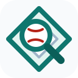

Rookie Watch
2026年の新人王候補を、セ・パ別に振り返る
2026年シーズンの新人王候補をセ・リーグ、パ・リーグに分け、野手と投手それぞれの成績をランキング形式で整理しています。順位はPlayer Lens独自の比較であり、公式の新人王選考や受賞結果を示すものではありません。
新人王は各リーグ1名の表彰です。このページでは比較しやすいように野手・投手を分けて表示し、順位はPlayer Lensの独自評価をもとにしています。

Player Lens2026年シーズンの成績をもとに、セ・パ別に新人王候補の野手・投手を比較できます。受賞結果とは別の独自評価です。
Rookie Watch
2026年シーズンの新人王候補をセ・リーグ、パ・リーグに分け、野手と投手それぞれの成績をランキング形式で整理しています。順位はPlayer Lens独自の比較であり、公式の新人王選考や受賞結果を示すものではありません。
新人王は各リーグ1名の表彰です。このページでは比較しやすいように野手・投手を分けて表示し、順位はPlayer Lensの独自評価をもとにしています。
プロ野球観戦メモ
2026年9月当時の成績と試合の印象から、セ・パの本命・対抗を考えた観戦メモです。確定した受賞結果を扱った記事ではありません。